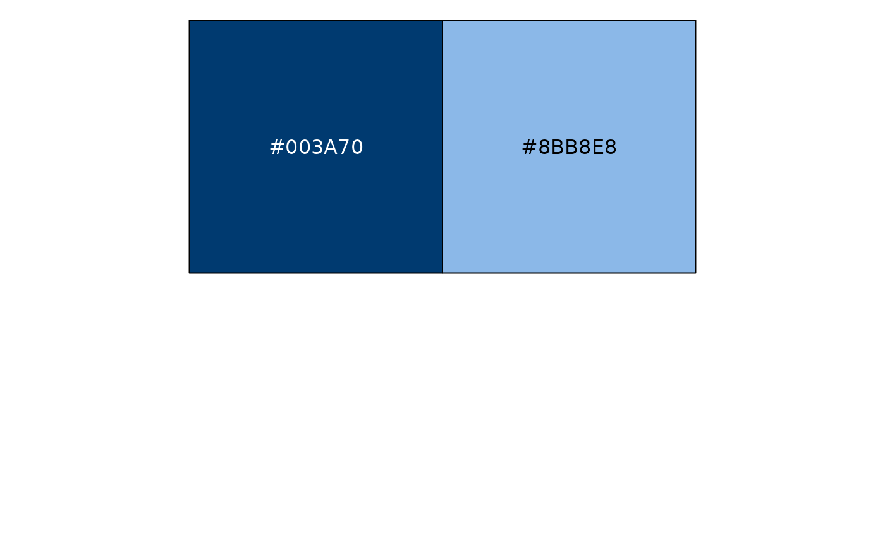
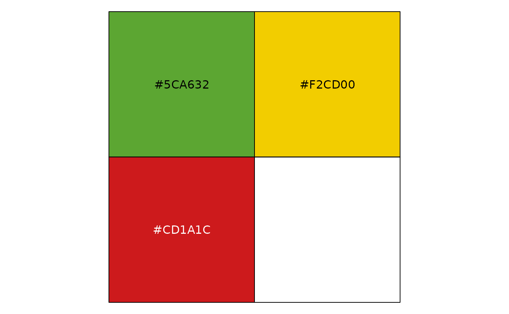

You can check out all the colors for each palette by running
brookings_view_palette('name_of_palette'). The colors in
some of these palettes may still change from feedback and further
experimentation. Some examples below:
Brand
The brand palette is the default for the
scale_brookings_ functions. Use colors from the brand
palette whenever possible.
brookings_view_palette('brand1')
#> [1] "c(#FF9E1B, #8BB8E8, #003A70)"
brookings_view_palette('brand2')
#> [1] "c(#B1B3b3, #FF9E1B, #003A70)"Analogous
Different shades of the same hue, or of similar hues can be used when the associated values are related.
brookings_view_palette('analogous1')
#> [1] "c(#8BB8E8, #003A70)"
brookings_view_palette('analogous2')
#> [1] "c(#3EB2C6, #003A70)"Contrasting
Colors on the opposite ends of the spectrum. Use Brookings Blue with Secondary colors.
brookings_view_palette('contrasting1')
#> [1] "c(#FF9E1B, #003A70)"
brookings_view_palette('contrasting2')
#> [1] "c(#F2CD00, #003A70)"Semantic
Where applicable, use colors that are associated with certain
concepts. For example, semantic3 could show subsets of
gender data (female, male and other).
brookings_view_palette('semantic1')
#> [1] "c(#F75C57, #59C6DA)"
brookings_view_palette('semantic2')
#> [1] "c(#E0BB00, #A00D11, #1C8090)"
brookings_view_palette('semantic3')
#> [1] "c(#FFDD00, #F75C57, #59C6DA)"Positive and negative
Shows pros, cons and neutral, or positive, negative and neutral data.
brookings_view_palette('pos_neg1')
#> [1] "c(#CD1A1C, #5CA632)"
brookings_view_palette('pos_neg2')
#> [1] "c(#CD1A1C, #F2CD00, #5CA632)"
Political
Use red and blue of similar intensity to represent data related to political parties in the US. Yellow in political3 and political4 represents ‘Independent’ category
brookings_view_palette('political1')
#> [1] "c(#ED3A35, #1479BB)"
brookings_view_palette('political2')
#> [1] "c(#F98B83, #5AADF6)"
brookings_view_palette('political3')
#> [1] "c(#E0BB00, #ED3A35, #1479BB)"
brookings_view_palette('political4')
#> [1] "c(#FFE926, #F98B83, #5AADF6)"Categorical
Distinguish discrete categories of data that do not have an inherent ordering. This palette uses distinct hues of visually similar brightness and saturation to avoid creating a sense of order or priority. A maximum of 6 categorical colors are provided as it becomes difficult for people to distinguish between hues after 5-8 colors. If more than 6 colors are needed, consider alternative solutions such as grouping some categories or using alternative visual cues.
brookings_view_palette('categorical')
#> [1] "c(#9e0d12ff, #de60a1ff, #f5cc05ff, #fd9d1fff, #00649fff, #2599adff)"
Sequential
Sequential palettes are used to show an inherent order or variations in numeric values. Light colors typically indicate low values and darker or brighter colors indicate high values.
brookings_view_palette('sequential1')
#> [1] "c(#bcdefbff, #87c4feff, #56adf6ff, #2e97eaff, #1c8ad6ff, #0f78baff, #00649fff)"In addition to variations in lightness, we can also use two distinct hues to give more contrast.
brookings_view_palette('sequential2')
#> [1] "c(#fce829ff, #b1dc44ff, #6dc960ff, #2bb275ff, #009a80ff, #008080ff, #0d636fff)"Diverging
Diverging palettes are useful when dealing with negative and positive values or a range of values that have two extremes with a baseline central value, like zero. The Brookings diverging palette should uses two distinct hues of similar brightness and saturation with a neutral color in the middle. Using a discrete set of colors with evenly distributed gradation can improve clarity of values relative to a continuous palette.
brookings_view_palette('diverging')
#> [1] "c(#e02928ff, #f07867ff, #f6b5a9ff, #efefefff, #b1c5deff, #739fceff, #0f78baff)"Miscellaneous
A pleasing option using Brookings Blue and accent yellow.
brookings_view_palette('misc')
#> [1] "c(#F2CD00, #3EB2C6, #003A70)"